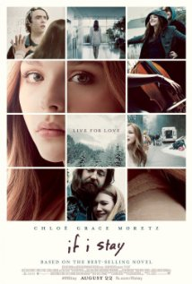

Mia Hall (Chloë Grace Moretz) dacht altijd dat kiezen tussen een muziekopleiding aan Julliard of bij haar grote liefde Adam (Jamie Blackley) blijven, de moeilijkste beslissing van haar leven zou zijn
Maar wat een in eerste instantie een zorgeloos familie-uitje had moeten zijn, mondt uit in een tragedie die alles verandert. Zwevend tussen leven en dood, is er nog maar één beslissing over voor Mia, die niet alleen haar toekomst maar ook haar lot bepaalt.
Een film van New Line Cinema en Metro-Goldwyn-Mayer Pictures, naar de gelijknamige bestseller (Als ik blijf) van Gayle Forman.